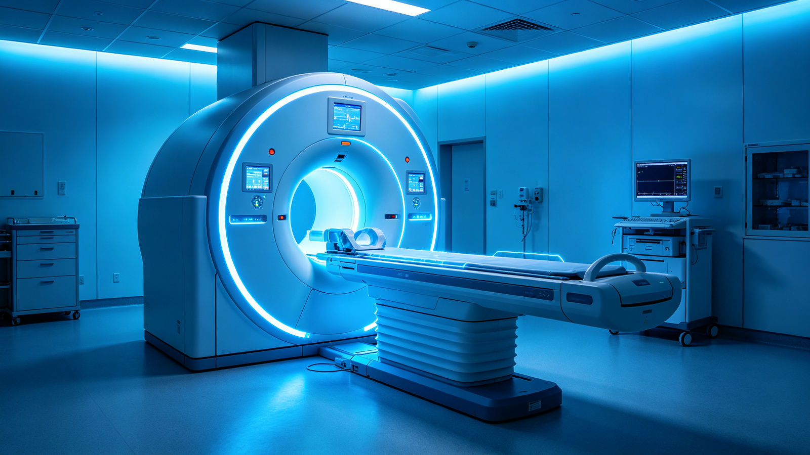
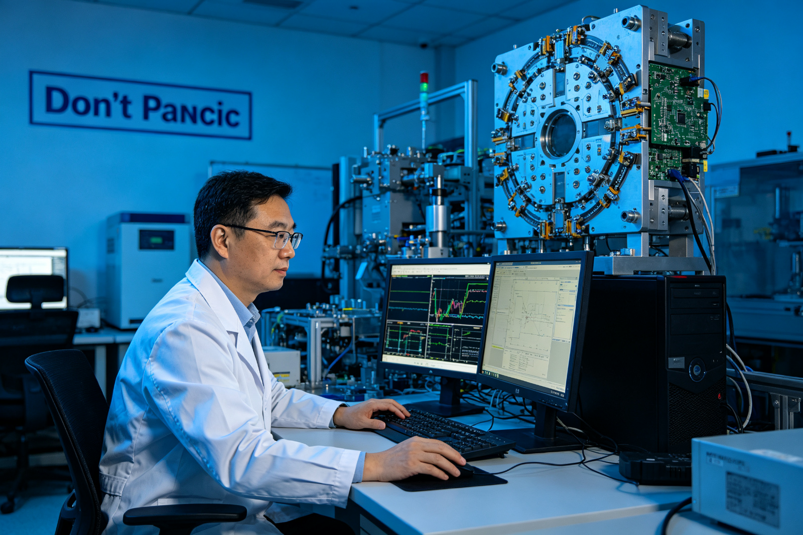
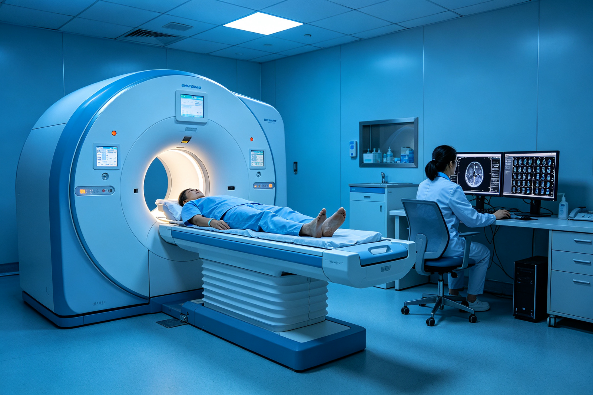
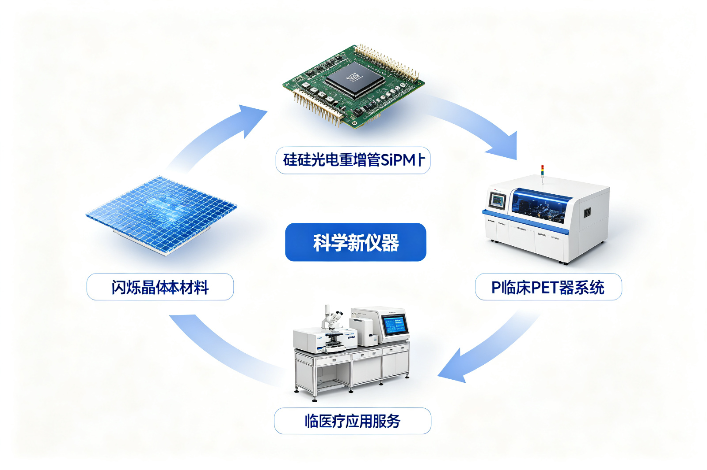
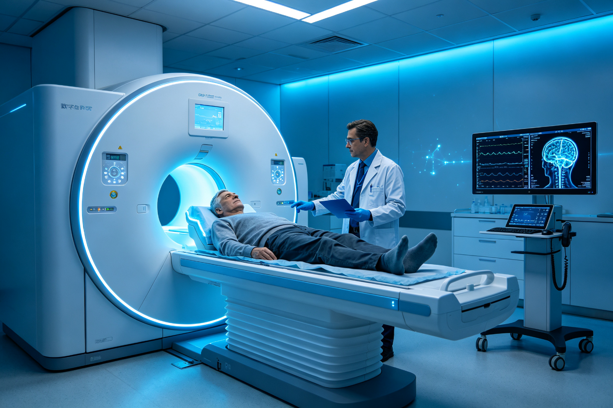

Domestically Developed Fully Digital PET Advances into the 'Uncharted Territory' of Science
[Editor's Note]In recent years, due to China entering late in high-end medical equipment, semiconductor processing equipment, and top-tier precision instruments, many core patent technologies have been controlled by foreign enterprises. Currently, under the impetus of national policies and an innovative entrepreneurial environment, some companies and researchers focused on cutting-edge industries have achieved significant breakthroughs after years of arduous efforts. To highlight these major technological innovations and patent conversion projects, this journal has specially launched a column titled 'Exploring High-Tech Frontiers'.
"Early detection and early treatment" is the current best approach to combating cancer. Only by detecting and precisely locating cancer cells in their early stages can we better fight against the "demon" of cancer and save more patients from peril. Mr. Luo, a nasopharyngeal cancer patient, was declared basically cured after undergoing cancer treatment at his hospital. However, during his participation as a volunteer in clinical trials for positron emission tomography/computed tomography (PET/CT) systems, it was discovered that the cancer had metastasized to his scapula, ribs, and femur. Doctors immediately initiated treatment, and Mr. Luo is now basically recovered.
This domestically developed cancer early warning system is a fully digital PET/CT device created by Professor Xie Qingguo from the Wuhan National Laboratory for Optoelectronics at Huazhong University of Science and Technology. Recently, the National Medical Products Administration published an announcement on its website listing the fully digital PET/CT among approved products, marking the official entry of domestically developed fully digital PET/CT medical devices into the market.
How did Professor Xie Qingguo's team spend 19 years breaking new ground, circumventing international giants' technological patent barriers, and solving the world-class challenge of PET digitalization? During interviews, it was found that from the inception, incubation, prototype development, to the final approval for market entry of fully digital PET, overcoming technical barriers and addressing funding shortages were all inseparable from intellectual property rights.
I. Overcoming Patent Barriers, Boldly Venturing into 'Uncharted Territory'

On the door to Professor Xie's office hangs a prominent sign that reads "Don't Panic". This phrase comes from the science fiction classic The Hitchhiker's Guide to the Galaxy, reminding space travelers not to panic when entering unknown territories. In Professor Xie's view, the path of scientific research is akin to venturing into the unknown, and one must have the courage to forge ahead.
PET stands for positron emission tomography, a molecular imaging device with extremely high biochemical sensitivity that serves as an essential tool for early tumor diagnosis. For a long time, PET key technologies and equipment markets were entirely controlled by 'GPS' (General Electric, Philips, Siemens), becoming a 'pain point' in China's healthcare sector.
If one chooses to follow the established technological path of 'GPS', the risk of developing related products would be significantly reduced. However, this approach can only make one a follower and not a leader, which is not what Professor Xie Qingguo aims for. Facing the intellectual property protection network consisting of over 3000 patents per company by each of these giants, it was unimaginable how difficult it would be for Xie Qingguo's team to break through. Therefore, Xie Qingguo adjusted his direction and ventured into a new path outside the main technological route of 'GPS', entering the scientific 'no man’s land' of fully digital PET, creating an entirely new track.
For example, full digital PET compared to traditional PET is like a digital camera versus a film camera; it represents a technological revolution and advancement.
PET has the advantage of high biochemical sensitivity, capable of capturing images of early-stage tumor cells in the human body, thus 'identifying' early-stage lesions. However, traditional PET cannot accurately digitize raw signals, requiring analog circuits to widen and slow down original pulse signals, making the system complex and data rough. This issue has persisted for 40 years, with three major shortcomings: 'inaccurate measurement', 'difficult use', and 'limited application'. These have prevented its enormous potential from being fully realized.
Full digital PET is characterized by full digitization and precise sampling, eliminating the need for analog circuit processing while achieving accurate digital capture of signals at their source. This results in clearer images that can detect smaller tumor lesions, facilitating early diagnosis and treatment while also making usage and maintenance more convenient and efficient.
Entering an 'uncharted territory', with no footsteps to follow, every step must be taken by oneself. 'If I had told others 19 years ago that I could make digital PET happen, they would have thought I was crazy!' Initially, Xie Qingguo himself wasn't sure if it could be done, but despite the fear of the unknown, he did not hesitate.
- In 2004, Xie Qingguo first proposed the MVT full-digital sampling method;
- In 2009, the team developed a fully digital and modular PET detector;
- In 2010, they produced the world's first small-scale digital PET machine, achieving a breakthrough from zero to one;
- In 2015, the global first full-digital PET for human clinical use was successfully developed;
- In 2018, the clinical full-digital PET/CT completed its clinical trials;
- Currently, the team has submitted over 500 patent applications both domestically and internationally, with more than 200 authorized.
"Now that full digital PET has finally obtained its first medical device registration certificate, it means we have truly created an international original. This new technological route has been proven to be correct and feasible!" Xie Qingguo said. Over a decade of hard work, the Xie Qingguo team has blazed a trail of innovation in the 'uncharted territory' of digital PET science, pioneering a completely new autonomous intellectual property technology route from its roots, fundamentally avoiding intellectual property risks and circumventing technological barriers set by international giants. The related technologies cover key nodes such as technical principles, core components, system construction, and industrial applications.
Two: Leveraging Patent Value to Tackle 'Hard Bones'
In a corner of the school, in an abandoned laboratory frequented by stray cats that brought many fleas, every team member was bitten. Unable to find another solution, they pooled money to hire someone to exterminate pests. In a 40-square-meter space, ten people squeezed together with barely enough room for one computer each. When assembling the prototype machine, tables were moved back and forth repeatedly to make space. This was where the team initially set up when preparing for industrialization. Most of the members are Xie Qingguo's students; before joining the digital PET team, they all had stable jobs with decent salaries.
"Do you want a job that you can see yourself doing until retirement, or do you prefer an endeavor filled with challenges and opportunities?" Zhang Bo, the clinical full-digital PET industrialization leader who is Xie Qingguo's master’s graduate, chose to join the digital PET team after working as a technology director at a tech company. Facing this 'hard science' that required relentless effort, he saw its immense potential and firmly believed in the great opportunities it would bring.

For high-end medical devices, after achieving technological breakthroughs, the next challenge is how to industrialize. The special nature of medical devices dictates that they have high entry barriers, large investments, slow returns, and long cycles, making market conversion akin to a 'hard bone' difficult to tackle. Starting from scratch, the team has always faced issues with funding and personnel, thus developing skills such as stretching money thin and taking on multiple roles.
"We don't regret this choice, believing that China's high-end medical devices will have a comeback one day." Recalling the days of working around the clock, Zhang Bo said that delivering fully digital PET even one day earlier could save another life.
Until 2015, Huangshi City Committee and Municipal Government in Hubei Province acted as 'angel investors', listing digital PET as the 'No. 1 Science and Technology Project' for transformation, with HuBei RuiShi Digital Medical Imaging Technology Co., Ltd. established in Ezhou as the industrialization unit for clinical fully digital PET.
In this process, patents played a key role as 'intangible assets'. During the preparation of the industrialization company, patents carried significant value and played a huge role. Patents not only demonstrated the advanced nature of the fully digital PET technology but also enabled technology transfer through patent pledge financing.
Zhang Bo revealed that at the time they had nothing but patents, which were their only valuable asset. However, in actual operations, there were many difficulties in using patent technology for pledge financing loans without risk compensation funds; banks were not very enthusiastic about issuing loans under such circumstances. It was precisely because of the advanced nature and promising future prospects of fully digital PET patent technology that RuiShi Company obtained loan funds through patent pledge financing with the guarantee from Ezhou City's investment and finance platform, solving an urgent need.
"Digital PET is not just an ordinary foreign investment attraction project; it aims to allow more people to benefit from PET. This is the significance of our support for this project." —— Former Secretary of the Ezhou Municipal Committee Li Bing
Three、Planning Patent Layout, Casting 'Innovation Loop'
Facts have proven that Ezhou's 'bet' was not misplaced. The technological advantages of digital PET in terms of digitization and modularity were fully demonstrated during industrialization.
In August 2015, the world's first clinical fully digital PET device was unveiled; from design to final production, the team only took 8 months, spending one-tenth of the time and funds compared to other large-scale high-end medical equipment companies that typically invest billions. It also required just one percent of the manpower. Western major enterprises take an average of seven years to make a PET machine, while Japan has not managed to produce one with full independent intellectual property rights in 22 years.

Recently, the first brain-specific fully digital PET was installed at Sun Yat-sen University's First Affiliated Hospital; this device was built on the basis of clinical fully digital PET and only took three months to complete. Currently, it has completed multiple brain imaging trials and is about to be used in major brain diseases such as Alzheimer's disease and Parkinson's disease.
The technical advantages brought by modularity also manifest in quick upgrades. Traditional PET uses dedicated components and parts, making technological upgrades and part updates slow. Digital PET internally adopts all universal electronic devices, which can achieve rapid updates along with the fast development of consumer electronics. This breaks away from the previous 'starting over' model and allows for 'on-demand personalized customization'.
"All this is due to the high technical potential brought by principle innovation. To ensure that technological potential continuously converts into industrial momentum, it's necessary to consider self-sufficiency across the entire industry chain." Xie Qingguo stated that only by ensuring no key nodes are blocked and forming a closed loop of technological innovation can survival and development be sustained in the long run.
Adhering to such principles, the team systematically planned the intellectual property strategic layout for digital PET from the very beginning. The industrial chain covers critical materials like scintillation crystals, core devices like SiPMs, key components of digital PET detectors, scientific instruments of fully digital PET, and whole-body clinical fully digital PET medical equipment systems. This has preliminarily completed vertical layout related to intellectual property rights, forming a complete innovation loop that guarantees self-sufficiency in technology.
Four、Encouraging Patent Protection, Iterating 'Optimal Solution'

China is a major country for cancer; in recent years, the incidence and mortality rates have been continuously rising, making cancer the leading cause of disease-related deaths among Chinese citizens. According to the latest national cancer statistics released this January, China's five-year survival rate for cancer patients is only 30.9%, less than half that of the United States. One important reason for low survival rates in China is the lack of timely detection and treatment of cancer.
The all-digital PET, with its outstanding imaging performance, significantly enhances the ability to detect cancer at an early stage. It can detect lesions as small as one-eighth of the highest level currently achievable by similar devices and a fraction of their average capability, meaning that cancer detection can be greatly advanced in time.
Feng Wei, head of nuclear medicine at Sun Yat-sen University Cancer Center in Guangzhou, who is responsible for clinical trials of all-digital PET, stated that multiple clinical trials have proven that the all-digital PET achieves expected imaging results across various body parts including the head and neck, chest, abdomen, and pelvis. The images show good tissue contrast, uniform background, and clear metabolic distribution. Even in high-resolution brain imaging requirements, image quality remains at a high level.
With fundamental innovation, digital PET has enormous potential for application in early diagnosis, precise treatment, and drug development. In the future, the team plans to develop a series of innovative PET systems aimed at new applications, including proton PET, brain PET, and super-PET, with the aim of addressing major scientific and public welfare issues in China. Traditional PET is used 94% for cancer diagnosis and efficacy evaluation; however, the emergence of all-digital PET can open up more new avenues for its application.
"This is just the first step of a long journey. For digital PET to truly succeed and make outstanding contributions to human health like 'GPS' did with traditional PET, there is still a long way to go." —— Xie Qingguo
"Theoretical difficulties that cannot be solved will be resolved by practice. Protecting intellectual property rights can encourage more people to join in the practical application of digital PET, continuously improving and iterating towards the optimal solution for future generations to benefit from. While deeply feeling the importance of patent protection in encouraging innovation, Xie Qingguo also laments the huge costs involved in maintaining foreign patents before profitability, making intellectual property seem like a 'liability' to innovators; how to turn this 'liability' into an advantage requires further exploration.
"Although there are many difficulties, they will not hinder our progress. Disease is our most formidable enemy, and our lifelong pursuit is to work with like-minded individuals to provide doctors with the best weapons against disease and safeguard human health." Xie Qingguo said firmly.
(Intellectual Property News Intern Reporter Li Sijing)